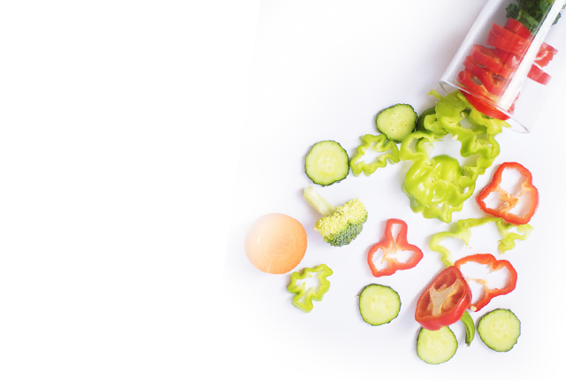

您对铁元素的需求比一般人群稍高，饮食应保持均衡的营养比例；另外，酸枣、猕猴桃等富含维生素C的食物可以促进人体对铁元素的吸收利用。
铁是人体生理代谢必需元素之一，是血红蛋白和许多酶类的重要成分。铁存在于人体所有的细胞内，各组织、器官包括各内分泌腺都含有铁。成人体内铁大部分存在于血红蛋白中，在人体内主要执行输送氧和携带排出二氧化碳的任务；此外，血红蛋白在维持血液酸碱平衡、组织传氧、免疫调节等方面也发挥重要得作用。
| 基因 | 位点 | 结果 |
|---|---|---|
| TMPRSS6 | 84198 | AA |
| TMPRSS6 | 84198 | BB |
| TMPRSS6 | 84198 | BB |
结果分析
需求高
需求正常
需求正常
您对于铁的每日推荐摄入量为15-20 mg可适当增加摄入量。
推荐食谱：红烧羊肉 食材：羊肉(瘦)、料酒、酱油、八角姜、大蒜、白砂糖、山楂、豆油
1.将羊肉用冷水洗净，再用开水泡过洗净，切成小块。
2.锅内放入少许豆油，将羊肉下入，加料酒、姜、茴香略炒。
3. 肉锅内再微加一些水，放入山楂，烧至六成熟时，加入酱油、糖、烧酥再加入大蒜即成。
推荐食谱：红烧羊肉 食材：羊肉(瘦)、料酒、酱油、八角姜、大蒜、山楂、豆油
1.将羊肉用冷水洗净，再用开水.
2.锅内放入少许豆油，将羊姜、茴香略炒。
推荐食谱：红烧羊肉 食材：羊肉(瘦)、料酒、酱油、八角姜、大蒜、白砂糖、山楂、豆油
1.将羊肉用冷水洗净，再用开水泡过洗净，切成小块。
2.锅内放入少许豆油，将羊肉下入，加料酒、姜、茴香略炒。
3. 肉锅内再微加一些水，放入山楂，烧至六成熟时，加入酱油、糖、烧酥再加入大蒜即成。
注意维生素C的补充：维生素C能够促进肠粘膜上皮对铁的吸收，并加强人体对铁的利用，具有非常好的增效作用。因此，可适当补充柑橘、木瓜、草莓等富含维生素C的食物。

铁缺乏分为三个阶段：
第一阶段为铁减少期，不会引起明显有害的生理后果；
第二阶段为红细胞生成缺铁期，会出现食欲低下、儿童易烦躁、抵抗力下降等，尚未出现贫血；
第三阶段为缺铁性贫血期，会出现疲劳乏力、头晕、心悸、工作能力下降、记忆力下降、易感染疾病等情况。
1.TMPRSS6编码膜结合丝氨酸蛋白酶，能够抑制铁调素的表达。研究表明，此基因上位点的多态性与缺铁性贫血有关，影响血红蛋白以及铁蛋白的含量。